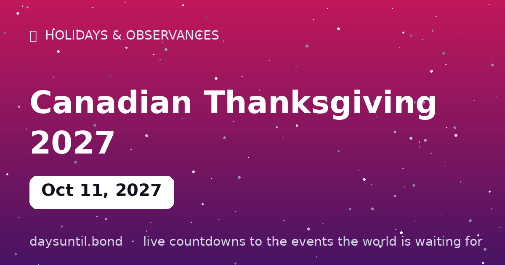

How Many Days Until Canadian Thanksgiving 2027?
Canadian Thanksgiving 2027 falls on Monday, October 11, 2027.
As of October 23, 2026: 353 days to go — 50 weeks and 3 days, 251 weekdays (102 weekend days), about 8,472 hours.

Quick facts
| Date | Monday, October 11, 2027 |
|---|---|
| Category | Holiday / observance |
About Canadian Thanksgiving 2027
Canadian Thanksgiving 2027 falls on Monday, October 11, 2027. The second Monday of October: Canada's harvest feast, which predates the American version by decades and lands while the maple leaves are at their best.
The live counter above updates every second and automatically switches to 'days since' once the day arrives.
When is Canadian Thanksgiving 2027?
Canadian Thanksgiving 2027 falls on Monday 11 October 2027 — the second Monday of October. The rule was fixed by Parliament in 1957 and has not moved since, so the date can be worked out years in advance.
The Monday placement gives Canada a three-day weekend in the middle of October, which is the whole point: it is a long weekend built around a harvest meal rather than a fixed anniversary.
Why Canada's Thanksgiving is in October
The short answer is latitude. Canada's harvest arrives earlier than the American one, so a thanksgiving for the harvest makes sense in October rather than late November. In Canadian terms, the American date is the anomaly, not this one.
The longer answer involves a long period of not being sure. Thanksgiving was observed on various dates through the nineteenth and early twentieth centuries — including an April date in 1872 to give thanks for the recovery of the Prince of Wales — before Parliament settled it. The 1957 proclamation fixed it as 'a day of general thanksgiving... for the bountiful harvest with which Canada has been blessed', to be held on the second Monday of October.
How it differs from American Thanksgiving
The obvious difference is the date: six weeks earlier, and a Monday rather than a Thursday. The more interesting differences are cultural. Canadian Thanksgiving is a harvest meal without the apparatus — there is no parade on the scale of Macy's, no Black Friday the next morning, and no shopping festival attached to it.
It is also a quieter holiday in practical terms. Because it is a Monday in October and not the anchor of a four-day national migration, travel around Canadian Thanksgiving is much lighter than the American peak, which is the single biggest reason the two holidays feel different.
Is it a statutory holiday?
In most provinces and territories, yes — but not all. Thanksgiving is a statutory holiday across most of Canada, while several Atlantic provinces treat it as optional rather than a mandatory day off. Employment standards for holiday pay therefore differ depending on where you work.
If you are trying to work out whether you have the Monday off, check your province's employment standards rather than assuming the federal position applies.
What people actually eat
Close to the American menu, with regional variations: roast turkey is the centrepiece in most of the country, with stuffing, mashed potatoes, gravy, cranberry sauce and — the part that differs most from the American table — pumpkin or butter tarts rather than pumpkin pie alone.
The harvest showing up on the table is the point of the day, so the side dishes are usually the seasonal ones: squash, root vegetables, apples and whatever grew well locally that year. In Atlantic Canada, seafood sits alongside or instead of the turkey.
A holiday with older roots than the country
Thanksgiving observances in what is now Canada predate Confederation by nearly three centuries. Martin Frobisher held a thanksgiving service in Newfoundland in 1578 after surviving the voyage to the Arctic, and Samuel de Champlain's Order of Good Cheer at Port-Royal in 1606 included communal feasts through the winter.
These were explorers' and settlers' observances rather than a continuous national tradition, and the modern holiday was assembled from them later. But the Canadian claim to the oldest thanksgiving in North America is not a modern invention.
What to do with the long weekend
The second Monday of October sits at a specific point in the Canadian year: after the harvest, before the snow, and at or near the peak of autumn colour in most of the country. That makes it the last comfortable long weekend for outdoor plans in much of Canada.
It is also the weekend a lot of cottage country closes for the season. If you are planning to open or close a cottage, book a campsite, or travel anywhere popular, the second Monday of October is one of the busier days of the autumn — earlier than people assume.
Canadian Thanksgiving in other years
The second Monday of October moves between the 8th and the 14th. Here is the next three.
Because the date shifts, the distance from Halloween varies — in some years the two are close enough that a Thanksgiving weekend pumpkin still looks reasonable on the 31st.
| Year | Canadian Thanksgiving | American Thanksgiving |
|---|---|---|
| 2027 | 11 October | 25 November |
| 2028 | 9 October | 23 November |
| 2029 | 8 October | 22 November |